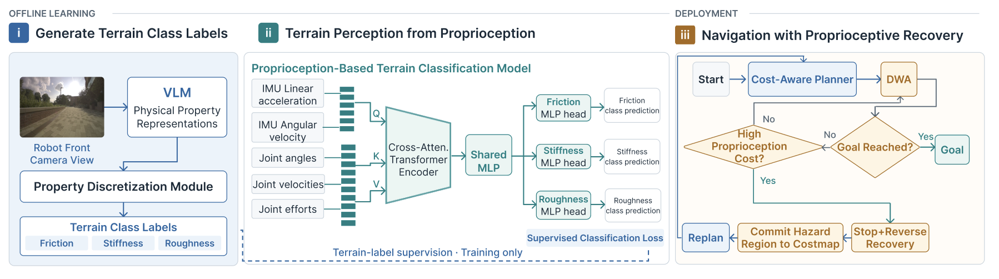
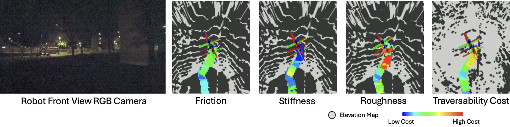
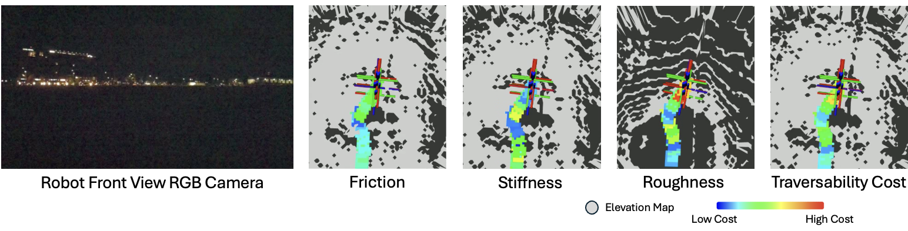
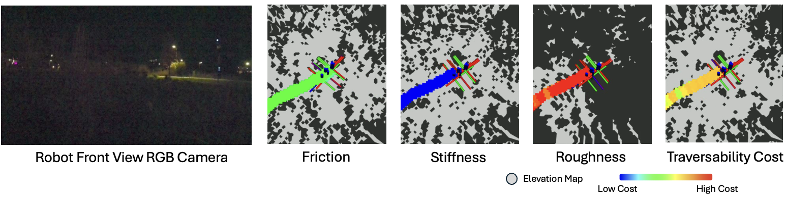

Seeing Through the Feet: Vision-Supervised Proprioceptive Terrain Physics Under Occlusion
1 University of Maryland, College Park 2 University of Pennsylvania 3 Stanford University
Abstract
We present VisPro-Phys, a vision-supervised learning-based framework for estimating terrain physical properties from proprioceptive data to support outdoor navigation. This is motivated by the limitations of exteroceptive sensors to identify occluded terrain. We consider three terrain properties: static friction, stiffness, and geometric roughness. Rather than estimating precise physical property values, which would require costly ground-truth measurements across large-scale outdoor environments, we employ a vision-language model (VLM) to generate pseudo-ground-truth labels for physical property ranges. Given noisy VLM outputs, we formulate the problem as classification of properties into ranges with resolutions feasible for navigation decisions. To support this approach, we collect a multimodal dataset comprising ∼3.3 km track length of visual, LiDAR, and proprioceptive data across diverse outdoor terrains, including pavement, sand, mulch, dense vegetation, and rocky surfaces. We train a neural network to predict these vision-generated properties from proprioceptive time-series data. Real-world experiments on a Ghost Robotics Vision 60 quadruped demonstrate an application of the proposed method in avoiding high-risk terrain that exteroceptive sensors fail to identify. Across the evaluated scenarios and compared with baseline methods, our method reduces vibration cost, root-mean-square IMU angular velocity and mean joint effort by 22.7%, 27.2%, 2.4% respectively, on average. Code and dataset will be released at the time of publication.
Main Contributions
- Vision-supervised terrain dataset. We collected synchronized RGB, LiDAR, and proprioceptive data along approximately 3.3 km of outdoor routes. A vision-language model generated weak labels for static friction, stiffness, and geometric roughness. A Gaussian mixture model informed how we grouped the continuous estimates into discrete classes.
- Proprioceptive terrain classifier. We developed a temporal cross-attention model that combines inertial and joint measurements to predict friction, stiffness, and roughness classes. At deployment, the classifier uses proprioception alone.
- Navigation recovery and field evaluation. We integrated the terrain predictions into a local navigation costmap so a Ghost Robotics Vision 60 quadruped could backtrack and replan after encountering hazardous terrain. We evaluated the approach in real-world outdoor experiments.
Method Overview
VisPro-Phys Overview: (i) RGB images from the robot front view camera are passed to a VLM to extract estimations of static friction coefficient, stiffness and geometric roughness of terrain in the range [0,1]. These estimations are then discretized to assign terrains with similar properties to the same discrete representative value. (ii) The labels derived from part (i) are used to train a classification model which takes proprioception data as input and outputs terrain classes based on representative friction, stiffness and roughness classes. (iii) For deployment, an A∗ planner is used to generate waypoints based on base local costmap from start point to goal point. A DWA planner is used to navigate between these waypoints. Proprioception cost of terrain is calculated with a constant frequency, using the model trained in (ii). If a high cost region is detected, the robot goes into recovery mode: it reverses and re-calculates the path to the goal point, this time avoiding high proprioceptive cost region.

Real-World Experiments
We evaluated the effectiveness of the proposed approach in several applications:
Recovery from occluded terrain hazards
VisPro-Phys is capable of detecting occluded high-risk terrain (hazards), using proprioception. Real-world experiments and evaluations include a pothole occluded by grass, a heap of dry grass and stones occluded by dry leaves. Across the evaluated scenarios, VisPro-Phys achieved the following average reductions relative to the baseline methods.
- Vibration cost
- 22.7%
- RMS IMU angular velocity
- 27.2%
- Mean joint effort
- 2.4%

Terrain Perception in Darkness
Because VisPro-Phys relies only on proprioception for perceiving the terrain, it has the capability to assess terrain physics in dark conditions. This assessment aids navigation in dark scenarios.



BibTeX
@misc{alvankarianSeeingThroughTheFeet,
title = {Seeing Through the Feet: Vision-Supervised Proprioceptive Terrain Physics Under Occlusion},
author = {Alvankarian, Fatemeh and Chopra, Samarth and
Carlier Blanco, Juan Esteban and Hoffman, Owen and
An, Jianyu and Liang, Jing and Manocha, Dinesh}
}